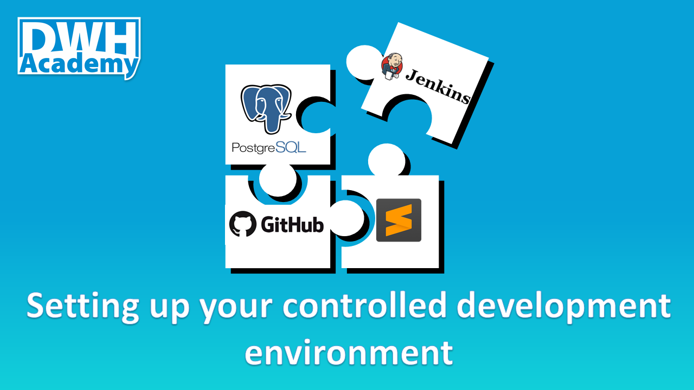

How to setup a controlled development environment
In my prior post How to keep the DWH entropy increase sustainable, I was talking about the essential rules for creating a controlled development environment. After such a theoretical introduction, it is time for the practical lesson.
The main goal of this post is to show how to organize a code repository and how to keep the repository in sync with the database environment. Well organized, completely transparent and controlled development environment is the precondition for any successful project.

Code repository structure
There are two main drivers of the repository structure design.
Developer work
The first driver is the effective work of developers. The developer should feel really comfortable with the repository structure. To simplify the work, it is worth considering all the contexts in which developers navigate through the code.
Typically there is a split by the database layers. In big projects, with thousands of scripts, the split can go further to subject areas or even to main target entities.
Except of such “target” context, there is “Source” context as well, so the directory structure can split also based on the source system streams.
Deployment order
The second driver of the repository structure is the support for a straightforward definition of the deployment order of all database objects. The deployment order is driven by object dependencies. The first level of dependencies is defined by the object type. The chain starts with the tables which are deployed first. Then we can continue with views and finally with procedures or macros.
The second level of dependencies is defined within one object type. This is relevant for the views and procedures. It is not good to define the object dependencies on object-level, specifying the deployment order object by object. Such a system is very hard to maintain, forcing us to rename many objects within each change.
It is much easier to split objects into groups having the same level of dependency. Starting with the views. Level 0 views are only built on top of the tables, level 1 views are built on top of tables and level 0 views. Level 2 views are built on top of tables, level 0 views, and level 1 views. And so on based on the project requirements, usually there are objects up to level 3 but that is not any dogma.
Similarily with the procedures which are defined after the views. Level 0 procedures are built on top of tables and views only. Level 1 procedures are built on top of tables, views and level 0 procedures. Still the same approach, no surprises. Part of the deployment can be also a load of the source data, collecting statistics on loaded tables and sometimes even the initial build of the whole data model.
But that is typically only in lower environments like development or sandboxes, to make the life of the developers easier, letting them focus more on the creative work, not wasting the energy on routine tasks which can be automated.
Demo project repository
Better to show it on a practical example. Our Demo project repository is in the initial phase of development evolution, it only contains the code created to support the post series about hierarchies so far. But there are already defined some metadata views level 0 and 1, see the picture below.

You can see the whole repository structure on the picture above. There are two top-level folders automation and sql. Content of automation folder we are going to cover later. The sql folder contains all project database objects. There are 3 main subfolders: 1_layers, 2_load, 3_exe. Each folder name starts with a number, this way we have under control the position of folders in the repository structure for easy navigation.
1_layers
It contains the database objects organized into DWH database layers as described in the post Proven DWH design: 1_stage, 2_integrated, 3_access. Additionally, we have here also a Metadata layer 4_meta in this project. We will talk about it soon.
2_load
There are plenty of approaches on how to organize the components used for building the data model. We use a simple one, having one procedure to build one database layer in which we are calling sequentially the procedures loading step by step all tables in the database. Even with this primitive approach, we can organize build components into parallel blocks and load data in parallel whenever it is possible. But that’s probably a topic for another post. For now, it is good to know that we store objects organizing the load of data in this folder. But only the procedure definitions, not their executions.
3_exe
In this folder, we store scripts for execution. Execution scripts may be related to tracking the information about the deployment or to the data load or to the testing.
Deployment automation
Good repository structure is essential but it is not enough. It’s great to have a well-organized code repository but without the ability to keep it in sync with the database environments, it doesn’t make much sense.
Deployment of the latest code into the database has to be just a matter of decision. The rest is automated, the only required action is pressing one button. Simple, fast, consistent, documented. Deployment needs to become an everyday routine for every developer. It should be repeated as frequently as possible during the whole development cycle. Then there are much fewer surprises during the deployment to production.
Automated deployment is not difficult to achieve, what is much harder is the full continuous integration, covering not only the deployment itself but also automated testing and the whole company quality approval process. That goes far beyond the topic of this post and honestly, it is still pure science fiction in most of the real DWH projects. But what I want to highlight here, is that it makes perfect sense to automate deployment, perhaps with initial load and few tests, even thou you can use it just in the development environments. This approach radically speeds up the development and significantly improve the quality of the results.
With the automated deployment, you perfectly know at any moment of time what version of code you have in any database environment. You do not accumulate garbage and at any point of time, you are ready to deploy the whole solution to a new sandbox, to delegate some piece of work to someone else, to develop several new features or work on bugs in parallel.
Jenkins
A perfect automation tool is Jenkins. It offers everything you need to create automation jobs. It provides the GUI to define and access all the jobs, it provides also robust logging system. The code of the job is defined as a sequence of steps called Pipeline. Below you can see the definition of deployment job. It starts with cleaning the workspace, then it makes a local copy of the code repository, then it copies the code of the deployment tool itself and follows the steps in the pipeline. Within the steps, you can use Jenkins plugins or call some shell scripts.
One of the defined steps is creating the deployment package. We use simple shell script for that.
The content of the deployment package is specified using a configuration file. It defines both dictionary of database names in all possible environments, and the list of deployed objects in required deployment order.

The complete configuration file is here
The deployment job is executed from a simple graphical interface where we specify the target environment, the source branch in GIT and our database credentials.

During execution you can see the sequence of job being processed

Also you get the complete log containing console output of all scripts being executed where you can analyse errors in case of job failure

Deployment metadata
To get full control over our deployments, it is useful to create simple metadata views providing the overview about all database objects, including the details when the object was deployed, who did the deployment and which branch in GIT repository was used.
The final picture is here

The view is based on the system catalog objects
Adding some extra information to it. As the system catalog in Postgres doesn’t contain the information about time database object changes, we add such information by ourself using one simple procedure, which we call within any object DDL.
There are two metadata tables we created to support our views. First with information about the deployment itself, second with deployment time for each object. As you could see in the deployment configuration file, there specific files deployed in the beginning and the end of the deployment. This files also contain the call of the procedure updating the deployment information in our metadata tables.
All codes are fully functional for Postgres database, ready in our GitHub repository Demo project
Some useful links about Jenkins are here: https://jenkins.io/doc/book/pipeline/jenkinsfile/
https://www.blazemeter.com/blog/how-to-use-the-jenkins-declarative-pipeline/
https://digitalvarys.com/jenkins-declarative-pipeline-with-examples/
https://www.cloudbees.com/sites/default/files/declarative-pipeline-refcard.pdf
https://gist.github.com/HarshadRanganathan/97feed7f91b7ae542c994393447f3db4
comments powered by Disqus